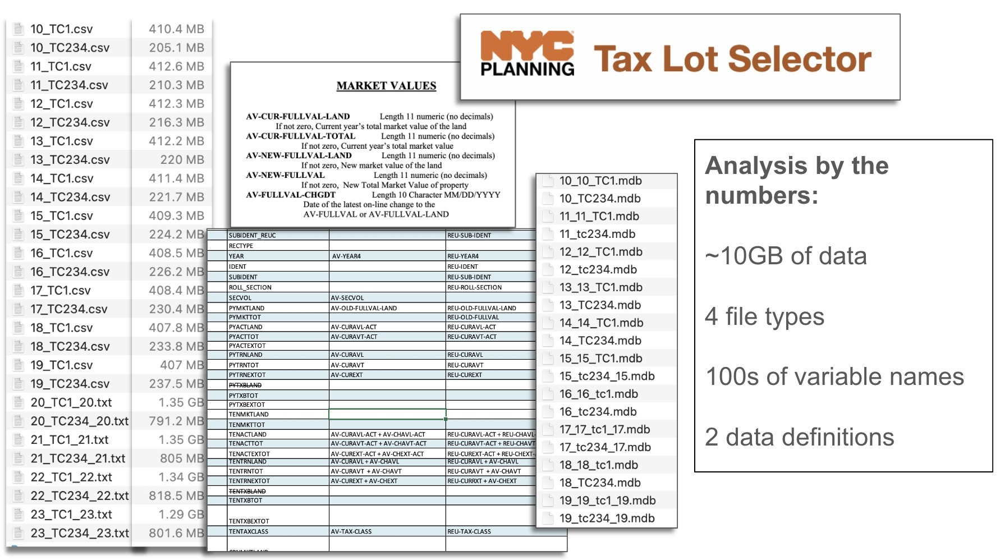
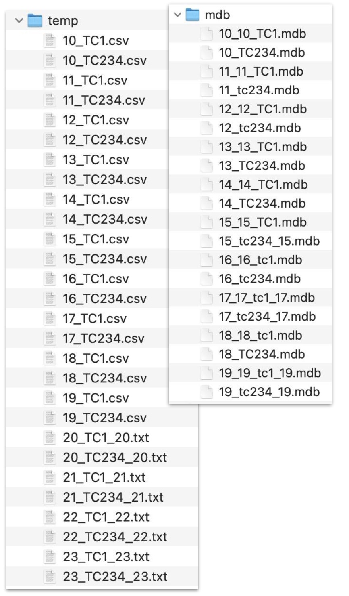
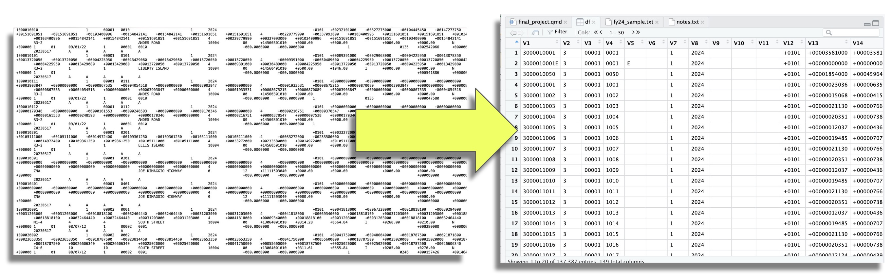

Final Project Individual Report: Jason Amey
What follows are my contributions our project on assessing Park Slope real estate values with the 2010 completion of the Prospect Park West bike lane.
Here is a singular Git repo for the project :
https://github.com/jasonamey/park-slope-west-property-analysis/tree/main
Much of my contributions for this project can be summed in this image:

Handling and processing 10GB of government tax assessment valuation data across multiple file types was immeasurably challenging. The project began with data acquisition, which involved identifying and scraping URLs for the data files hosted by the NYC Department of Finance.
The NYC Department of Finance site relies on JavaScript for rendering and did not allow for direct scraping, so the HTML for the site itself was downloaded and scraped locally. The code was designed to scrape and process links to .zip files containing NYC tax assessment archive data from the local HTML file.
> show the code
# Code extracts all the links to the .zip files from the NYC tax assessment archive data
# HTML was copy/pasted and saved locally as page is generated with javascript
library(httr2)
library(rvest)
html_file_path <- "final_project/src/scripts/scraping/dept_of_finance_tax_assessment_archives.html"
base_url <- "https://www.nyc.gov"
webpage <- read_html(html_file_path)
# Extract all <a> tags
links <- webpage |>
html_elements("a") |>
html_attr("href")
# Append the base URL for relative links
full_urls <- ifelse(grepl("^/", links), paste0(base_url, links), links)
# Filter for .zip files and for those related to /tar/tc or 2023/2024
full_urls <- full_urls[grepl("\\.zip$", full_urls)] # Only .zip files
full_urls <- full_urls[grepl("tar/tc|2023|2024", full_urls)] # Match files for 2023 and 2024
# Create a data frame to store the results
url_data <- data.frame(
full_urls
)
# Define the output file path and save the data
output_csv_path <- "final_project/data/tax_class_urls_t.csv"
write.csv(url_data, file = output_csv_path, row.names = FALSE)These files were downloaded using R and organized into a temporary directory structure to ensure proper categorization by year and type. This initial step, supported by the use of libraries like httr2 and readr, was essential for maintaining an efficient workflow while managing the sheer volume of files.
> show the code
# Cycle through all urls to download
for (i in 1:length(urls)) {
url <- urls[i]
temp_file <- tempfile(fileext = ".zip") # Create a temporary file for downloading the .zip
temp_dir <- "final_project/data/temp" # Define the temporary directory path
response <- request(url) |> # Send an HTTP request to the URL
req_perform() # Perform the request and download the file
writeBin(resp_body_raw(response), temp_file) # Save the downloaded file to the temporary location
unzip(temp_file, exdir = temp_dir) # Unzip the contents into the temporary directory
# Add a sleep to avoid hitting rate limits
Sys.sleep(1)
}
PARENT_DIR <- "final_project/data/temp"
for (i in 9:23) { # Loop through a specified range of years (e.g., 2009 to 2023)
dir_name <- paste(PARENT_DIR, i, sep = "/") # Create a folder for each year
dir.create(dir_name, showWarnings = FALSE) # Ensure the directory is created if it doesn't already exist
print(paste("Created directory:", dir_name))
}The next step focused on file extraction and organization. .zip files from the downloaded data were restructured into folders reflecting their source year. Code was created to rename extracted files with a consistent naming convention, making it easier to track and combine data later in the process. This work required handling .zip, .mdb, and .txt files. For instance,
> show the code
PARENT_DIR <- "final_project/data/temp"
for (i in 9:23) {
dir_name <- paste(PARENT_DIR, i, sep = "/")
dir.create(dir_name, showWarnings = FALSE)
print(paste("Created directory:", dir_name))
}
FILES <- list.files("final_project/data/temp", pattern = "\\.zip$", full.names = TRUE)
for (i in 1:length(FILES)) {
number <- sub(".*_(\\d+)\\.zip$", "\\1", FILES[i])
# Extract the number from the file name
number <- sub(".*_(\\d+)\\.zip$", "\\1", FILES[i])
# New Directory
dir_name <- paste0("final_project/data/temp/", number)
# New file path
new_file_path <- file.path(dir_name, basename(FILES[i]))
# Move the file to the corresponding directory
file.rename(FILES[i], new_file_path)
}
BASE_DIR <- "final_project/data/temp"
# List subdirectories in the base directory
folders <- list.dirs(BASE_DIR, full.names = TRUE, recursive = FALSE)
# Loop through each folder
for (folder in folders) {
# Skip if the folder name is not numeric (i.e., avoid the 'extracted' folder)
folder_name <- basename(folder)
if (!grepl("^\\d+$", folder_name)) {
next
}
# List .zip files in the folder
zip_files <- list.files(folder, pattern = "\\.zip$", full.names = TRUE)
# Extract and rename files
for (zip_file in zip_files) {
# Create a subfolder named "extracted" within the current folder
extracted_dir <- file.path(folder, "extracted")
if (!dir.exists(extracted_dir)) {
dir.create(extracted_dir)
}
# Unzip the file into the 'extracted' directory within the current folder
unzip(zip_file, exdir = extracted_dir)
# List all files extracted in the 'extracted' folder
extracted_files <- list.files(extracted_dir, full.names = TRUE)
# Rename each extracted file by adding the folder name to the file
for (extracted_file in extracted_files) {
new_name <- paste0(folder_name, "_", basename(extracted_file))
new_path <- file.path(extracted_dir, new_name)
file.rename(extracted_file, new_path)
}
}
}
# Define the base directory
BASE_DIR <- "final_project/data/temp"
# List all subdirectories (recursive) and find those named 'extracted'
extracted_folders <- list.dirs(BASE_DIR, full.names = TRUE, recursive = TRUE)
extracted_folders <- extracted_folders[grepl("extracted$", extracted_folders)]
# Loop through each 'extracted' folder
for (folder in extracted_folders) {
# List all files in the 'extracted' folder
extracted_files <- list.files(folder, full.names = TRUE)
# Move each file to the 'temp' directory
for (file in extracted_files) {
# Define the new location in the 'temp' directory
new_location <- file.path(BASE_DIR, basename(file))
# Move the file
file.rename(file, new_location)
}
# Remove the now-empty 'extracted' folder
unlink(folder, recursive = TRUE)
}
# List all items in the directory
all_items <- list.files(BASE_DIR, full.names = TRUE)
# Filter for directories
folders <- all_items[file.info(all_items)$isdir]
# List all .mdb and .txt files
files_to_keep <- list.files(BASE_DIR, pattern = "\\.(mdb|txt)$", full.names = TRUE)
# Loop through each folder and delete it if it's not a .mdb or .txt file
for (folder in folders) {
if (!(folder %in% files_to_keep)) {
unlink(folder, recursive = TRUE)
}
}The .mdb files had to be converted to .csv format using an external cli toolmdb-export. (I unsuccessfully tried to write a bash script to handle this) i.e :
MacBook-Pro temp % mdb-tables 16_16_tc1.mdb
NameTable tc1
MacBook-Pro temp % mdb-export 16_16_tc1.mdb tc1 > 16_TC1.csv
The end result looked like this: 
With the files prepared, data cleaning and integration became the focus. Working with dozens of variables across different data definitions required creating a pipeline to standardizing variable names, trimming space, and ensure consistent formatting. Borough-specific filtering was implemented to focus on Brooklyn properties (Borough 3) with ZIP codes in the target neighborhoods (11215 and 11218) and the correct tax class (2, 2A, 2B, 2C). Additionally, each property was assigned a unique ID based on its BLOCK and LOT number, which facilitated the merging across the different datasets. All of the relevant varialbes were selected.
> show the code
base_property_info_1 <- read_csv(csv_files[1]) |>
mutate(BORO = as.numeric(BORO)) |>
filter(BORO == 3) |>
mutate(LOT = trimws(LOT)) |>
mutate(ID = paste(BLOCK, LOT, sep = "-")) |>
filter(ZIP %in% c(11215, 11218)) |>
select(ID, BORO, BLOCK, LOT, TXCL, ZIP, YRB, TOT_UNIT, RES_UNIT, STR_NAME, BLDGCL, HNUM_LO, HNUM_HI)
base_property_info_2 <- read_csv(csv_files[2]) |>
mutate(BORO = as.numeric(BORO)) |>
filter(BORO == 3, TXCL %in% c("2", "2A", "2B", "2C")) |>
mutate(LOT = trimws(LOT)) |>
mutate(ID = paste(BLOCK, LOT, sep = "-")) |>
filter(ZIP %in% c(11215, 11218)) |>
select(ID, BORO, BLOCK, LOT, TXCL, ZIP, YRB, TOT_UNIT, RES_UNIT, STR_NAME, BLDGCL, HNUM_LO, HNUM_HI)
base_joined <- bind_rows(base_property_info_1, base_property_info_2)
# Merge the 2 classes of commercial properties
for (i in seq(1, length(csv_files), by = 2)) {
number <- sub(".*\\/([0-9]+)_.+", "\\1", csv_files[i])
col_name <- paste("VALUE", number, sep = "_")
first <- read.csv(csv_files[i])
second <- read.csv(csv_files[i + 1])
first_t <- first |>
mutate(BORO = as.numeric(BORO)) |>
filter(BORO == 3) |>
mutate(LOT = trimws(LOT)) |>
mutate(ID = paste(BLOCK, LOT, sep = "-")) |>
rename(!!sym(col_name) := NEW_FV_T) |>
filter(ZIP %in% c(11215, 11218)) |>
select(ID, !!sym(col_name))
second_t <- second |>
mutate(BORO = as.numeric(BORO)) |>
filter(BORO == 3, TXCL %in% c("2", "2A", "2B", "2C")) |>
mutate(LOT = trimws(LOT)) |>
mutate(ID = paste(BLOCK, LOT, sep = "-")) |>
rename(!!sym(col_name) := NEW_FV_T) |>
filter(ZIP %in% c(11215, 11218)) |>
select(ID, !!sym(col_name))
joined <- bind_rows(second_t, first_t)
reference_base_2010_2019 <- reference_base_2010_2019 |>
left_join(joined, by = "ID")
}
reference_base_copy <- reference_base_2010_2019Combining datasets for analysis involved merging and aggregating files from different years and formats. For the years 2010 to 2019, .csv files were used to construct a base dataset of residential properties, focusing on relevant fields such as tax class, total units, residential units, and street name. But for 2020 to 2023, .txt files were parsed using string manipulation functions to extract and process tab-delimited data, ensuring alignment with the structure of the earlier dataset.
The .txt files are a sight to behold: 
Once the 2019 - 2023 .txt files were processed, they were merged with the 2011 - 2019 data and saved as one singular .csv file.
> show the code
# Open all the .txt files for 2020 - 2023
txt_files <- list.files("final_project/data/temp", pattern = "\\.(txt|TXT)$", full.names = TRUE)
# Process all .txt files from 2020 - 2023 then merge with the base_copy file of 2010 - 2019 values
for (i in seq(1, length(csv_files), by = 2)) {
# change to i
number <- sub(".*/(\\d+)_.*", "\\1", txt_files[i])
col_name <- paste("VALUE", number, sep = "_")
# change to i
first <- readLines(txt_files[i])
first_records <- strsplit(first, "\n")
first_parsed <- lapply(first_records, function(record) strsplit(record, "\t"))
first_rows <- do.call(rbind, lapply(first_parsed, function(x) unlist(x)))
first_df <- as.data.frame(first_rows)
# change to i
second <- readLines(txt_files[i + 1])
second_records <- strsplit(second, "\n")
second_parsed <- lapply(second_records, function(record) strsplit(record, "\t"))
second_rows <- do.call(rbind, lapply(second_parsed, function(x) unlist(x)))
second_df <- as.data.frame(second_rows)
nrow(first_df)
nrow(second_df)
first_t <- first_df |>
mutate(V3 = as.numeric(V3), V4 = as.numeric(V4), V25 = as.numeric(V25)) |>
mutate(V78 = trimws(V78)) |>
filter(V78 %in% c("11215", "11218")) |>
mutate(V34 = trimws(V34)) |>
filter(V2 == "3", V34 %in% c("1", "1A", "1B", "1C", "1D", "2", "2A", "2B", "2C")) |>
mutate(ID = paste(V3, V4, sep = "-")) |>
rename(!!sym(col_name) := V25) |>
select(ID, !!sym(col_name))
second_t <- second_df |>
mutate(V3 = as.numeric(V3), V4 = as.numeric(V4), V25 = as.numeric(V25)) |>
mutate(V78 = trimws(V78)) |>
filter(V78 %in% c("11215", "11218")) |>
mutate(V34 = trimws(V34)) |>
filter(V2 == "3", V34 %in% c("1", "1A", "1B", "1C", "1D", "2", "2A", "2B", "2C")) |>
mutate(ID = paste(V3, V4, sep = "-")) |>
rename(!!sym(col_name) := V25) |>
select(ID, !!sym(col_name))
joined_2020_2023 <- bind_rows(second_t, first_t)
reference_base_copy <- reference_base_copy |>
inner_join(joined_2020_2023, by = "ID")
}
# No understanding why, but this code is creating duplicates of ID "874-68"
reference_base_copy_t <- reference_base_copy |>
filter(ID != "874-68")
# Save data to a .csv
write.csv(x = reference_base_copy_t, "final_project/data/finance/2010_2023_park_slope_values.csv")Throughout this process, testing and debugging played a critical role in ensuring the integrity of the data. Duplicate IDs, inconsistent formatting, and discrepancies in variable definitions were recurring issues that required careful attention.
Of note:
- the problems created by
"2C"vs."2C "(shoot me) - phantom, unrecognizable, bug-creating
UTF-8characters randomly created in10GB+of government data - the
NAs (so manyNAs) - the inconsistencies in year-to-year reporting
After (painful) cleaning, parsing, and integration, the dataset was saved as a consolidated .csv file.
All told, that process above was honestly ~5 seasons of The Sopranos worth of coding (fyi: this is still the funniest scene in the series), and by far the majority of work I did for the project.
I think it’s very cool I was able to do this.
Beyond that, I :
- Created the scaffolding of the interactive app to integrate the data (Clinta did the hard work of getting the maps with
leafletto work) - Did all of the work involved with hosting the app (This is harder than it sounds - the code needs to be migrated to another, older, computer. Don’t ask.)